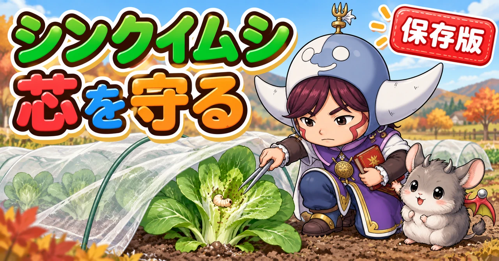
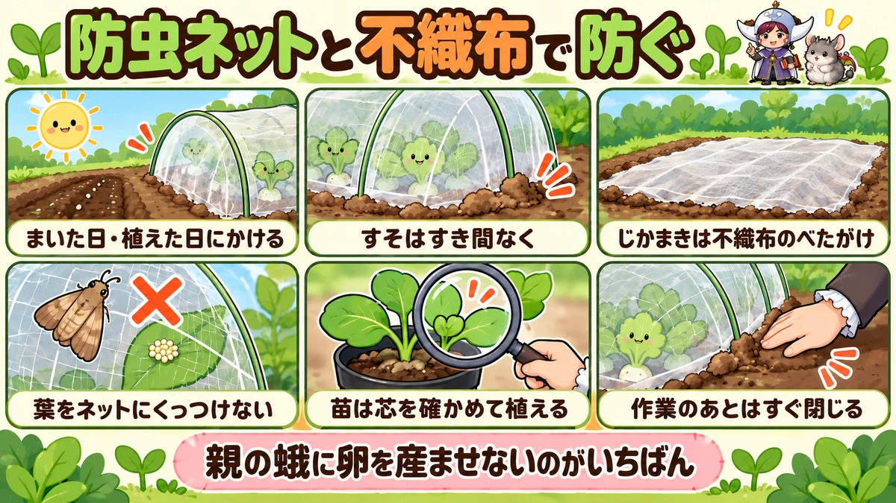

シンクイムシ対策の決定版｜白菜・キャベツ・ブロッコリー・大根の芯を食べる虫の見つけ方と、防虫ネットで守るこつ

📖 この記事の目次
この記事で分かること
- シンクイムシは、白菜、キャベツ、ブロッコリー、大根、かぶなど、アブラナ科の野菜の「芯」を食べる虫です。正体は、ハイマダラノメイガという小さな蛾の幼虫です。
- 芯は、新しい葉が出てくる成長点です。ここを食べられると、その後うまく育たなくなります。白菜やキャベツは巻かなくなり、大根は形の悪いものになりがちです。
- 被害が多いのは、秋冬野菜のタネをまいたり植えつけたりした直後から、まだ株が小さいうちです。
- 予防のいちばんの決め手は、タネまきや植えつけの直後から防虫ネットや不織布をかけて、親の蛾に卵を産ませないことです。
- 芯のまわりに、糸のようなものや、茶色っぽい汚れがあったら、中に幼虫がいます。つまようじやピンセットでそっと探して取りのぞきます。
秋、白菜やキャベツの苗を植えて、ひと安心。ところが、しばらくして見に行くと、苗の真ん中が茶色く汚れていて、新しい葉が出てこない。大根の芽を見ると、外の葉は元気なのに、真ん中の芽だけがきれいに食べられている。こんなことはありませんか。
それは、シンクイムシのしわざかもしれません。秋冬野菜を育てる人なら、一度は出会うと言ってよいほど、よく出る虫です。この記事では、シンクイムシの見つけ方と取り方、出さないための防ぎ方まで、順番に書いていきます。
この記事の読み方
いま苗の芯が食べられていて困っている人は、「見つけ方」と「見つけたら」から読んでください。これからタネをまく、苗を植えるという人は、「防ぎ方の基本」が役に立ちます。
早見：シンクイムシ
- 正体：ハイマダラノメイガという小さな蛾の幼虫
- ねらわれる野菜：白菜、キャベツ、ブロッコリー、カリフラワー、大根、かぶなど、アブラナ科の野菜
- 出やすい時期：夏の終わりから秋。秋冬野菜のタネまき、植えつけの時期。寒くなると少なくなる
- 被害：芯（成長点）を食べる。新しい葉が出なくなる。白菜、キャベツは巻かなくなる。大根は形が悪くなる。ひどいと株が枯れる
- 見つけ方：芯のまわりに、糸のようなものや、茶色っぽいふんがまじった汚れがある
- 防ぎ方：タネまき、植えつけの直後から防虫ネットや不織布。苗を買うときは芯を確かめる。2〜3日に一度、芯をのぞく

シンクイムシを知る
芯を食べる虫
シンクイムシという名前は、「芯を食う虫」から来ています。新しい葉が出てくる株の真ん中、成長点を、ねらって食べます。ほかの虫のように外側の葉を食べるのではなく、株の中心にもぐりこんで、そこから食べ進みます。
正体は小さな蛾の幼虫
シンクイムシと呼ばれる虫は、ハイマダラノメイガという蛾の幼虫です。親の蛾が葉に卵を産み、卵からかえった幼虫が、株の芯にもぐりこみます。幼虫は、生まれたばかりのころはとても小さく、白っぽい、ベージュがかった色をしています。育っても、それほど大きな虫ではありません。
卵をたくさん産む
親の蛾は、1匹でたくさんの卵を産みます。一生のうちにたくさんの卵を、あちこちの株に少しずつ産みつけていきます。家庭菜園くらいの広さなら、あっというまに畑じゅうに広がってしまうこともあります。
糸を出して、芯に隠れる
幼虫は、芯のまわりに糸を出して、繭のような、綿のようなものを作り、その中に隠れて食べます。糸には、幼虫のふんがまじって、茶色っぽい、ベージュのような汚れに見えます。この汚れが、シンクイムシを見つける大きな手がかりになります。
被害の出方
成長点を食べられると、その後が育たない
芯は、新しい葉が出てくる成長点です。ここを食べられると、新しい葉が出てこなくなり、株はそれ以上うまく育ちません。わきから芽が出てくることもありますが、元のようなよい株には、なかなか戻りません。
白菜、キャベツは巻かなくなる
白菜やキャベツのように、葉が巻いて玉になる野菜は、芯を食べられると、玉が巻かなくなります。また、葉が巻きはじめてから中にもぐりこまれると、外からは見つけにくく、手当てもしにくくなります。
ブロッコリーは、花蕾ができにくい
ブロッコリーも、成長点を食べられると、真ん中の花のつぼみ（花蕾）がうまくできなくなります。
大根は、形の悪いものに
大根は、葉が巻く野菜ではないので、成長点の一部をかじられても、新しい芽が出てきて育ちつづけることがあります。ただ、成長点を食べられた大根は、まっすぐ育たず、形の悪いものになりがちです。
ひどいと、株ごと枯れる
株が小さいうちに大きな被害を受けると、株全体が枯れてしまうこともあります。苗のうちが、いちばん注意が必要な時期です。
見つけ方
まず芯を見る
株の真ん中、新しい葉が出てくるところを見ます。本来なら、やわらかい、きれいな黄緑色の葉があるはずです。そこに、次のようなものがないかを確かめます。
- 白い糸のようなもの、綿のようなもの
- 茶色っぽい、ベージュのような汚れ（糸とふんがまじったもの）
- 芯の葉が、しおれたり、茶色くなったりしている
- 新しい葉が、なかなか出てこない
糸や汚れがあったら、中にほぼ間違いなく幼虫がいます。探してもいないように見えても、汚れがあるなら、もう少しよく探します。
指ではなく、細いもので
芯のまわりはとてもやわらかく、指で強く広げると、成長点を傷めてしまいます。割り箸、つまようじ、ピンセット、やわらかい歯ブラシなど、先の細いものを使って、葉を1枚ずつそっと広げながら探します。
葉の裏も見る
シンクイムシは、芯にもぐる前に、葉の裏にいることもあります。白菜やキャベツは、外側の葉の裏や、葉と葉のあいだも見ておきます。
ほかの虫とのちがい
- シンクイムシ：芯（成長点）に、糸とふんの汚れ。中に小さな白っぽい幼虫
- アオムシ（モンシロチョウの幼虫）：外側の葉に穴をあけて食べる。緑色の虫。葉の上に緑色のふん
- ヨトウムシ：夜に出てきて葉を食べる。昼は株元の土の中に隠れている
- ハムシのなかま：小さな甲虫。葉に小さな穴がたくさんあく。大根の根の表面をかじることも
芯だけが食べられて、外の葉は元気というときは、シンクイムシを疑います。

見つけたら
取りのぞいて、つぶす
幼虫を見つけたら、ピンセットなどでつまみ出して、つぶします。生まれたばかりの幼虫はとても小さいので、汚れごとつまみ出すようにします。1匹見つけたら、同じ株やとなりの株にも、まだいないかを確かめます。
取り方の手順
- 株の真ん中を上からのぞき、糸や汚れがある株を探す
- つまようじや割り箸の先で、芯のまわりの葉をそっと広げる
- 汚れの中や、葉と葉のすき間にいる幼虫を探す
- ピンセットでつまみ出し、つぶす
- 芯に残った糸や汚れも、そっと取りのぞく
- 同じ株の葉の裏、となりの株の芯も確かめる
食べられた株はどうするか
成長点を食べられてしまった白菜やキャベツは、玉が巻かないことが多くなります。まだタネまきや植えつけが間に合う時期なら、思いきって植えなおすほうが、結果として収穫につながることがあります。時期が遅く植えなおしが難しいときは、わきから出てくる芽を育てて、葉を食べる野菜として収穫する、という手もあります。
大根は、新しい芽が出てきて育ちつづけることがあるので、幼虫を取りのぞいて、そのまま様子を見ます。
大根は、様子を見る価値がある
大根の成長点の一部がかじられていても、幼虫を取りのぞけば、新しい芽が出てきて育ちつづけることがあります。白菜やキャベツのように玉を作る野菜ではないので、成長点が少し傷んでも、取り返しがつく場合があります。すぐにあきらめず、芯の様子を見守ります。
薬を使う場合
シンクイムシに使える薬剤もあります。タネまきや植えつけのときに土にまく粒のもの、水で薄めてかけるものなどがあります。使う場合は、ラベルに書かれた野菜、使う時期、回数、量を必ず守ります。ただし、芯の奥にもぐりこんだ幼虫には、外からかけた液が届きにくいこともあります。薬を使うなら、もぐりこむ前の、早い時期がポイントになります。
予備の苗を用意しておく
白菜やキャベツの苗を自分で育てるときは、植える数より少し多めに育てておくと、植えつけ直後に芯を食べられた株が出ても、すぐに植えなおせます。秋冬野菜は植えつけの時期が遅れるほど育つ期間が短くなるので、予備の苗があると、取り返しがききやすくなります。
防ぎ方の基本
1. タネまき、植えつけの直後から防虫ネット
いちばん確実なのは、親の蛾を株に近づけないことです。タネをまいたら、または苗を植えたら、その日のうちに防虫ネットをかけます。ネットは、トンネル用の支柱を立てて、その上からかけます。ネットのすそは、すき間ができないように、土をかぶせたり、押さえをしたりして、しっかりふさぎます。
防虫ネットをかけた大根と、かけなかった大根を並べて育てると、ネットをかけたほうは、シンクイムシなどの被害がほとんど出ず、育ちも大きくちがった、という例も紹介されています。ネットは100%防げるものではありませんが、それでも物理的にさえぎる効果は、とても大きいものがあります。
2. ネットに葉がくっつかないように
株が大きくなって、葉がネットにぴったりくっつくと、親の蛾がネットの外から、くっついた葉に卵を産みつけることがあります。卵からかえった幼虫はとても小さいので、ネットの目をくぐって中に入ってしまいます。ネットは、株との間にゆとりができる高さにかけます。ブロッコリーのように背が高くなる野菜は、途中でネットの高さが足りなくなることがあるので、高めの支柱を使うか、目の細かいネットを選びます。
3. 不織布のべたがけ
大根やかぶなど、タネをじかにまく野菜は、タネをまいたあと、畝の上に不織布を直接かけておく方法もあります（べたがけ）。支柱を立てる手間がなく、手軽です。不織布をかけると、虫よけになるだけでなく、乾燥を防いで発芽がそろいやすくなり、寒い時期には保温の効果もあります。芽が伸びてきたら、トンネルにかけなおすか、防虫ネットに切りかえます。
4. 苗を買うときは、芯を確かめる
防虫ネットをかけていたのに被害が出た、ということがあります。原因のひとつは、植えつけたときに、すでに苗の芯に卵や幼虫がいたことです。ネットの中に虫を閉じこめてしまうと、外からは入れなくても、中で育ってしまいます。苗を買うとき、自分で育てた苗を植えるときは、芯に糸や汚れがないか、葉の裏に卵や虫がいないかを、よく確かめてから植えます。
5. 2〜3日に一度、芯をのぞく
防虫ネットをかけていても、2〜3日に一度は、芯をそっとのぞいて確かめます。幼虫が小さいうちに見つければ、被害は小さくすみます。ネットの中なら、見回りは週に1回ほどでも十分という声もありますが、苗が小さいうちは、こまめに見るほど安心です。
6. 肥料をやりすぎない
肥料をやりすぎて、葉がやわらかく茂りすぎた株は、虫に狙われやすくなります。アブラムシなども寄ってきやすくなります。肥料は量を守り、がっしりした株に育てます。
7. 時期を考える
シンクイムシは、夏の終わりから秋の、まだ暖かい時期に多く、寒くなると少なくなります。秋冬野菜のタネまきや植えつけは、ちょうど被害が多い時期と重なります。早くまきすぎると、それだけ被害を受けやすい時期が長くなります。

防虫ネットのかけ方のこつ
かけるのは、その日のうちに
タネをまいた日、苗を植えた日のうちに、ネットをかけます。数日あけてしまうと、その間に親の蛾が卵を産みつけることがあります。
すそは、すき間なく
ネットのすそに、すき間があると、そこから虫が入ります。すそは、土をかぶせて埋めるか、ネット押さえやピンでしっかりとめます。畝の両端も、ネットをまとめて結び、杭などで固定します。
ネットの目の細かさ
シンクイムシの親の蛾を防ぐには、ふつうの防虫ネットでも効果があります。アブラムシなど、さらに小さな虫も防ぎたいときは、目の細かいネットを選びます。目が細かいほど、ネットの中の温度が上がりやすくなるので、まだ暑い時期は注意します。
破れていないか、確かめる
前の年に使ったネットは、小さな穴があいていることがあります。かける前に広げて、破れがないかを確かめます。
作業のあとは、すぐかけなおす
間引きや追肥でネットを開けたら、作業が終わったらすぐにかけなおします。開けたまま畑を離れないようにします。
寒くなって保温をする前に、虫を取る
寒くなって、ビニールのトンネルで保温をする時期になったら、かける前に、畝や株に虫がいないかを確かめます。トンネルの中は外より暖かいので、残った虫にとっては住みやすい場所になってしまいます。
防虫ネットと不織布の張り方
防虫ネットのトンネルの手順
- タネまき、または植えつけが終わったら、畝に水をやっておく
- トンネル用のアーチ支柱を、畝をまたぐように、等間隔にさしこむ
- 支柱の高さは、育ったときの株の大きさを考え、葉がネットにくっつかない高さにする
- 防虫ネットを畝の端から端までかぶせ、畝の両端はネットをまとめてしばり、杭などに結ぶ
- ネットのすそを、すき間ができないように土で埋めるか、押さえでとめる
- 最後に、ネットの上から全体を見て、たるみや破れ、すき間がないかを確かめる
不織布のべたがけの手順
- タネをまいたら、畝の表面を手で軽く押さえ、水をやる
- 不織布を、畝の上にふわっと直接かける
- 不織布の四方を、土をのせるか、ピンでとめて、風で飛ばないようにする
- 芽が出て、不織布を持ち上げるくらいに伸びてきたら、トンネルにかけなおすか、防虫ネットに切りかえる
ネットと不織布を重ねる方法
まだ日ざしが強い時期に、防虫ネットの上から不織布をかけると、日よけにもなります。不織布を重ねると、寒冷紗をかけたのと近いくらいの日よけの効果があるとも言われます。暑さで苗が弱るのを防ぎながら、虫も防げます。
苗を自分で育てるとき
苗のうちから、ネットの中で
白菜やキャベツ、ブロッコリーの苗を自分で育てると、植えつける前の苗のうちに、シンクイムシやネキリムシの被害を受けることがあります。苗を並べておく場所を、防虫ネットで囲っておくと、薬を使わなくても被害をかなり防げます。ネットの中に苗を置くスペースをひとつ作っておくと、毎年使えて便利です。
植えつけ前に、1株ずつ確かめる
ネットの中で育てた苗でも、植えつける前には、1株ずつ芯と葉の裏を確かめます。ここで虫を見つけて取りのぞいておけば、畑のネットの中に虫を持ちこまずにすみます。
植えつけ直後は、特に注意
植えつけたばかりの苗は、まだ根が張っておらず、芯を食べられると立ち直る力がありません。秋冬は、夏野菜のように少し傷んでもまた勢いよく育ち直す、ということが少なくなります。植えつけから根づくまでの間は、特にこまめに芯を見ます。
間引きのときに見ておくこと
大根やかぶ、小松菜など、タネをじかにまく野菜は、間引きのときがシンクイムシを見つけるよい機会です。大根なら、本葉が2〜3枚のころに1回目、5〜6枚のころに2回目の間引きをするのが目安です。
- 間引くときは、まず芯を食べられた株、芯に汚れのある株から抜く
- 外の葉が元気でも、成長点だけきれいに食べられている苗は、残しても育たない
- 残す株の芯も、つまようじでそっとのぞいておく
- 間引きが終わったら、ネットや不織布をすぐにかけなおす
いっしょに出やすいほかの虫
シンクイムシが出る時期は、ほかの虫もたくさん出てきます。いっしょに気をつけておきたい虫です。
- アオムシ、コナガ：外側の葉に穴をあけて食べる。葉の裏に卵を産むので、葉の裏をよく見る
- ヨトウムシ：夜に出てきて葉を食べる。昼は株元の土の中に隠れている。米ぬかを入れたペットボトルのわなを畑に置く方法もある
- ハムシのなかま：小さな甲虫で、葉に小さな穴をたくさんあける。集団で食べると、葉が網の目のようになることもある。大根では、根の表面をかじって傷をつける虫もいる
- アブラムシ：芯の近くの、やわらかい葉に集まる。肥料が多いと増えやすい
これらの虫の多くも、親が外から飛んでくるので、防虫ネットでまとめて防げます。ただ、アブラムシのようなとても小さな虫は、目の粗いネットはくぐりぬけてしまいます。
野菜ごとの注意
白菜
白菜は、芯を食べられると巻かなくなるので、被害の影響が大きい野菜です。植えつけ直後から防虫ネットをかけ、葉が巻きはじめるまでは、芯をこまめに確かめます。10月の初めごろから、ほかの虫の被害も増えてくるので、葉の穴や、葉の裏もあわせて見ます。成長点が無事なら、若い葉が少し食べられていても、その後回復することが期待できます。
キャベツ
キャベツも、芯を食べられると玉ができにくくなります。白菜と同じように、植えつけ直後からネットをかけ、芯を確かめます。
白菜とキャベツは、巻きはじめが分かれ目
白菜とキャベツは、葉が立ち上がって巻きはじめると、芯が外から見えにくくなります。巻きはじめる前に、芯にもぐりこんだ幼虫をすべて取りのぞいておくことが、きれいな玉を作るための分かれ目になります。巻きはじめのころに、もう一度ていねいに芯をのぞいておきます。
ブロッコリー、カリフラワー
成長点を食べられると、花蕾ができにくくなります。背が高くなるので、ネットの高さに気をつけ、葉がネットにくっつかないようにします。
大根、かぶ
タネをじかにまくので、芽が出たばかりの小さいうちに被害を受けやすくなります。タネまき直後から不織布や防虫ネットをかけ、芽が出たら、芯を確かめます。外の葉は元気なのに、成長点だけきれいに食べられている苗を見つけたら、シンクイムシを疑います。大根は、根の表面をかじるハムシのなかまにも注意します。
カリフラワー
カリフラワーもブロッコリーと同じように、成長点を食べられると、花蕾がうまくできません。株が大きく育つので、ネットは高めにかけます。
プランターの秋冬野菜
プランターで育てる大根や小松菜なども、シンクイムシの被害を受けます。プランター用の小さな防虫ネットや、洗濯ネットのようなものをかぶせる方法もあります。
被害が出てしまった畝の立て直し
ネットの中で何株か芯を食べられてしまったら、次のように立て直します。
- 畝のすべての株の芯を、つまようじでのぞき、残っている幼虫を取りのぞく
- 芯を食べられた白菜やキャベツは、予備の苗があれば植えかえる。なければ、わき芽を育てて葉を食べる野菜として使う
- 大根は、芯の様子を見て、新しい芽が出てくるかを待つ
- ネットのすそや破れを確かめ、葉がくっついているところは支柱を足して高くする
- それから数日は、毎日芯をのぞいて、取り残しがないかを確かめる
見回りのチェック表
秋冬野菜のタネまき、植えつけから1か月ほどは、次のことを確かめます。
- 芯：糸、綿のようなもの、茶色っぽい汚れがないか。新しい葉が出てきているか
- 葉の裏：卵や小さな虫がついていないか
- 外の葉：穴があいていないか。アオムシやハムシのなかまがいないか
- 株元：昼に株元の土を少し掘ると、ヨトウムシが隠れていないか
- ネット：すそにすき間や破れがないか。葉がネットにくっついていないか
- 間引き、追肥のあと：ネットや不織布をかけなおしたか
見つけた虫と、見つけた日をメモしておくと、次の年に、いつごろ気をつければよいかが分かります。書くのは、野菜の名前、日付、虫の種類、何株に出たか、の4つだけで十分です。
次の年に向けて
被害の記録を残す
シンクイムシは、毎年だいたい同じような時期に出てきます。どの野菜に、いつごろ、どのくらい出たかを、栽培の記録に書いておきます。次の年は、その時期の少し前から、ネットと見回りの準備をしておけます。
ネットと支柱を早めにそろえる
秋冬野菜のタネまきや植えつけの日に、ネットや支柱が足りないと、かけるのが数日遅れてしまいます。夏のうちに、去年のネットに破れがないかを確かめ、足りない分を用意しておきます。畝の長さと幅に合ったネットを用意しておくと、当日あわてずにすみます。
片づけで、虫を残さない
収穫が終わった株や、被害を受けて抜いた株は、虫や卵が残っていることがあります。畑のすみに積んでおかず、片づけておきます。アブラナ科の野菜の残りを畑に置いたままにすると、次にまいた野菜のそばで、また虫が増えるもとになります。
季節ごとにやること（一般的な地域の目安）
- 8月下旬〜9月：秋冬野菜のタネまき、植えつけ。その日のうちに防虫ネットや不織布。苗は芯を確かめてから植える
- 9月〜10月：シンクイムシの被害がいちばん多い時期。2〜3日に一度、芯をのぞく。間引きや追肥のあとは、ネットをすぐかけなおす
- 10月〜11月：寒くなると少なくなる。保温のトンネルをかける前に、虫を取りのぞく
説明が分かれるところ
防虫ネットか、不織布か
支柱を立てる手間がない分、不織布のべたがけを勧める人もいます。一方、株が大きくなる白菜やキャベツ、ブロッコリーは、トンネルにした防虫ネットのほうが、株との間にゆとりがとれて向いています。タネをじかにまく大根やかぶは不織布、苗を植える白菜やキャベツは防虫ネット、と使い分けるのもひとつの方法です。
見回りは、どのくらいの間隔か
2〜3日に一度は芯をのぞいて、見つけしだい取る、という説明がある一方、防虫ネットをかけていれば、週に1回ほどの見回りでも十分だった、という例もあります。ネットをきちんとかけているか、苗が小さいか、まわりに虫が多い畑か、によって必要な間隔は変わります。苗が小さいうちはこまめに、ネットの中で株が育ってきたら間隔をあける、と考えると無理がありません。
手作りの液は使えるか
唐辛子を焼酎に漬けた液や、油石けん水を使う方法も知られていますが、どちらも農薬のきまりで、虫よけに使うことが認められていない資材です。それに、芯の奥にもぐりこんだ幼虫には、外からかけた液は届きにくいものです。防虫ネットと見回りを中心にし、薬剤を使う場合は、登録のあるものをラベルどおりに使います。
ちがう野菜をまぜて植える
虫は、好きな野菜のにおいをたよりに寄ってきます。アブラナ科の野菜の間に、レタスなど、ちがうなかまの野菜をはさんで植えると、虫が寄りにくくなるという考え方もあります。どのくらい効くかは条件によりますが、防虫ネットと組み合わせて試してみる価値はあります。
よくある失敗
植えつけの数日後に、ネットをかけた
その数日のあいだに、親の蛾が卵を産みつけていることがあります。ネットは、その日のうちにかけます。
ネットをかけたので、安心して見なかった
苗に最初から卵や幼虫がいたり、葉がネットにくっついたところから入られたりして、ネットの中で被害が出ることがあります。ネットをかけていても、芯は見ます。
指で芯を広げて、成長点を傷めた
芯はとてもやわらかく、指で強く広げると傷みます。つまようじやピンセットなど、細いものでそっと広げます。
汚れがあるのに、虫がいないとあきらめた
幼虫はとても小さく、汚れにまぎれて見えにくいものです。汚れがあるなら、まだ中にいると考えて、もう一度よく探します。
間引きのあと、ネットを開けたままにした
開けていたあいだに、親の蛾が入りこむことがあります。作業が終わったら、すぐにかけなおします。
よくある質問
小松菜や水菜にも出ますか
小松菜や水菜、チンゲン菜なども、アブラナ科の野菜なので、シンクイムシの被害を受けることがあります。葉を食べる野菜でも、成長点を食べられると、新しい葉が出てこなくなります。タネまき直後から不織布や防虫ネットをかけておきます。
とうもろこしの実を食べる虫と同じ虫ですか
とうもろこしの茎や実を食べる虫も、メイガのなかまの幼虫ですが、シンクイムシと呼ばれるハイマダラノメイガとは別の種類です。どちらも、植物の中にもぐりこんで食べる点は似ています。
シンクイムシの被害にあった野菜は、食べられますか
虫を取りのぞいて、食べられたところを取れば、残りは食べられます。ただ、成長点を食べられた株は、その後うまく育たないことが多いので、収穫できる大きさにならないこともあります。
ネットの中なのに、被害が出ました
植えたときに、すでに苗に卵や幼虫がいた可能性があります。また、葉がネットにくっついていたところから、外で生まれた小さな幼虫が入りこんだ可能性もあります。芯を確かめて取りのぞき、ネットは株からはなしてかけなおします。
どのくらいの間隔で見ればいいですか
苗が小さいうちは、2〜3日に一度、芯をのぞくのが目安です。防虫ネットをかけていて、株が育ってきたら、間隔をあけてもかまいません。
ネットをかけると、中が暑くなりませんか
まだ暑さが残る時期は、ネットの中の温度が上がりやすくなります。目の細かいネットほど、風が通りにくくなります。暑い日が続くときは、ネットの上から不織布や寒冷紗をかけて日よけをするか、目の細かさを選び直します。ネットを外してしまうと、その間に親の蛾がやってくるので、外さずに工夫します。
ネットを買う余裕がありません
大根やかぶなど、タネをじかにまく野菜なら、不織布のべたがけだけでも、かなりの効果があります。不織布は比較的手に入れやすく、くり返し使えます。プランターなら、洗濯ネットや、ネットの切れはしをかぶせる方法でもかまいません。
白菜の葉が巻きはじめたら、もう見なくていいですか
巻きはじめてからでも、中にもぐりこまれることがあります。巻きはじめると中が見えにくくなるので、それまでにしっかり防いでおくことが大切です。外側の葉の裏や、玉のてっぺんに汚れがないかを見ておきます。
寒くなったら、ネットは外してもいいですか
寒くなるとシンクイムシは少なくなりますが、ほかの虫や、寒さ、鳥の被害を防ぐためにも、そのままかけておいてかまいません。真冬に保温のトンネルに切りかえるときは、かける前に虫がいないかを確かめます。
芯に汚れがあるのに、虫が見つかりません
生まれたばかりの幼虫は、とても小さく、汚れの中や、葉と葉の重なりの奥にまぎれています。つまようじで汚れを少しずつほぐしながら、奥のほうまで探します。見つからないときは、翌日もう一度見ます。汚れが増えていたり、芯の葉がしおれてきたりしたら、まだ中にいます。
タネまきを遅らせれば、被害は減りますか
シンクイムシは暖かい時期に多いので、タネまきや植えつけを遅らせると、被害を受ける期間は短くなります。ただ、秋冬野菜は、寒くなる前にある程度大きく育てておく必要があるので、遅らせすぎると、玉が巻かない、大きくならない、ということになります。時期は適期を守り、その代わりにネットでしっかり守るのが基本です。
雨の日も見たほうがいいですか
雨の日は、ネットを開けると中が濡れ、作業もしにくいので、無理に開けなくてかまいません。雨が上がった日に、まとめて見ます。
学ぶ：シンクイムシのくらし🔬
なぜ、芯をねらうのか
芯（成長点）のまわりには、生まれたばかりのやわらかい葉が集まっています。小さな幼虫にとって、やわらかくて食べやすく、まわりの葉に包まれて、外敵や雨風から身を守りやすい場所です。生まれたばかりの小さな幼虫が、まっすぐ芯にもぐりこむのは、食べ物と隠れ家が同じ場所にあるからと考えられます。
なぜ、糸を出すのか
幼虫が芯のまわりに出す糸は、自分の身を守る巣のようなものです。糸でやわらかい葉をつづり合わせ、その中に隠れて食べることで、鳥や、ほかの虫などの天敵に見つかりにくくなります。糸にふんがまじって茶色っぽく見えるので、人間にとっては、かえって見つける目じるしになります。
なぜ、成長点を食べられると育たないのか
植物の葉や茎は、成長点で新しい細胞が作られることで伸びていきます。成長点は、いわば株の工場です。そこを食べられると、新しい葉を作れなくなり、株はそれ以上伸びられません。わきに眠っている芽が代わりに伸びてくることもありますが、元の芯ほど勢いよくは育ちません。
なぜ、アブラナ科ばかりねらうのか
虫は、それぞれ食べる植物がある程度決まっています。ハイマダラノメイガの幼虫は、アブラナ科の野菜を好んで食べます。親の蛾は、アブラナ科の野菜が出すにおいをたよりに、卵を産む場所を探すと考えられています。アブラナ科の間にちがうなかまの野菜をはさむと虫が寄りにくくなる、という考え方は、このにおいを手がかりにしています。
なぜ、寒くなると減るのか
ハイマダラノメイガは、暖かい時期に活発に動き、卵を産んで数を増やします。気温が下がってくると、親の蛾の動きがにぶくなり、卵を産む数も減っていきます。秋冬野菜の被害が、タネまきや植えつけ直後の、まだ暖かい時期に集中するのはこのためです。株が小さく、虫がまだ元気な時期を、ネットで乗りきることが大切です。
まとめ
ここまで読んでくださって、ありがとうございます！
シンクイムシのポイントを、もう一度まとめておきます。
- シンクイムシは、ハイマダラノメイガの幼虫。アブラナ科の野菜の芯（成長点）を食べる
- 芯を食べられると、白菜やキャベツは巻かず、大根は形が悪くなる。苗のうちがいちばん危ない
- 芯に糸や茶色っぽい汚れがあったら、中に幼虫がいる。つまようじやピンセットでそっと探して取る
- タネまき、植えつけの日のうちに防虫ネットや不織布。すそはすき間なく。葉がネットにくっつかないように
- 苗は芯を確かめてから植える。ネットの中でも、2〜3日に一度は芯をのぞく
秋冬野菜のタネをまいたら、その日のうちにネットをかけておくこと。それだけで、シンクイムシの被害の多くは防げます🥬
防虫ネット
タネをまいた日、苗を植えた日のうちにかけて、親の蛾に卵を産ませません。すそはすき間なく埋めます。


アーチ支柱
ネットを株から離してトンネルにかけるのに。葉がネットにくっつくと、外から卵を産まれます。

不織布
大根やかぶなどのじかまきは、まいた畝に直接かけるだけ。発芽がそろいやすく、保温にもなります。
![[商品価格に関しましては、リンクが作成された時点と現時点で情報が変更されている場合がございます。]](https://hbb.afl.rakuten.co.jp/hgb/56bc237a.e97551b1.56bc237b.2513ed10/?me_id=1310260&item_id=10000879&pc=https%3A%2F%2Fthumbnail.image.rakuten.co.jp%2F%400_mall%2Fdiokasei%2Fcabinet%2F007fusyokufu%2F12g%2Fimgrc0092049705.jpg%3F_ex%3D240x240&s=240x240&t=picttext "[商品価格に関しましては、リンクが作成された時点と現時点で情報が変更されている場合がございます。]")
あわせて読みたい


次に読む
記事一覧へ